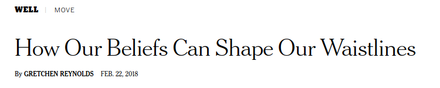

New York Times should know better
Sat 24 February 2018 New York Times / Woo Woo / Science / Research / Studies /
Quick Overview
- A New York Times article nearly claims that you can will away excess fat and a longer lifespan.
- Article reads like a press release rather than scientific journalism.
- There may be much more plausible ways to present the study findings.
Entry
This New York Times article has a rather stunning headline.

How our beliefs can shape our waistlines. No, this isn't 1974. Yes, that headline implies far more than what the science it discusses and the article itself can promise. (I have read that very often it is the case that the headline is set by editors rather than the journalist, with the goal of grabbing the readers attention, so some commercial "poetic" license is to be expected.)
I have seen enough instances where journalism hits upon something I'm familiar with or was a part of some way to know that journalism is to reality what painting is to pictures. Very good journalist are like very good classical painters, and what they portray can capture the reality of what they are reporting on with a high level of verisimilitude. Some journalist are more like abstract painters, and what you read is an interpretation of reality with some very extreme liberties taken. A healthy civic body will be filled with individuals trained in critical thinking who will have an open-minded but skeptical way of consuming "news". Sometimes you have to triangulate your news. For example, reading a report on something from a liberal leaning source and a conservative leaning source will likely give you a fuller picture of the subject being reported than either alone.
When it comes to science journalism, however, there is sometimes, perhaps often, the complication that the journalist reporting on a study or discovery may not be entirely qualified to understand it. After all, the scientist who produced the study or claim the discovery have spent years, often decades, deeply entrenched in their field of study. And the scientific endeavor has become highly specialized such that no one person could know many fields deeply enough to be consider an expert in them all. This is all to say that the job of being a science journalist (including health-focused journalism) is a very difficult one, and one that I respect deeply. It was science journalism that planted the seeds for my passion for science when I was a little kid.
Let's get to why I find this one article problematic. It opens with a very promising paragraph that,
though carefully fused with the words might, suggests, and hints, basically boils down to "mind over
matter might be real!" That kind of thinking was very popular in the 1960s and 1970s, and let's be
honest, lots of scientist hooked into that kind of thinking in extreme ways, e.g. ESP research, not
to mention that researcher who killed an elephant with LSD. In more recent times we have something
called "mindfulness" which is a much more legitimate line of research, though the jury is
still out
on how effective it is for our health. In any case, there is pretty solid evidence that our
psychological state of mind impacts our health.
I have the impression that the medical field has been very careful to approach this issue in such a way
as to avoid any association or hints of the woo woo history of "mind over matter", which is one reason
why this article surprised me.
Quoting The Times on the study in question (they also mention an earlier study that had less than 100 subjects, a number too small to draw any statistically sound conclusions and so I won't even mention further):
They found strong correlation between people’s dying early and their believing that they were relatively inactive, even if their accelerometer data indicated that they were getting as much exercise as others their age in this group. Risk of early death was up to 71 percent higher than for the group that, correctly or not, felt confident that they exercised more than their peers. This correlation held true when the researchers controlled for chronic diseases, socioeconomic status, smoking and other factors.
That last sentence is key. That last sentence is so incredibly key that it should have gotten at least one entire paragraph to itself, two or three would have made me happy. That's where the magic happens!
OK, so I don't have the article because it is pay-walled (can we please move beyond this pay-wall nonsense? It is 2018 and pay-walls on journals do nothing to help science and everything to line the pockets of the journal publishers). So you might say, well shut up then. But I won't shut up, because the New York Times didn't, and also because I have the abstract! When I read the abstract my eyes were desperately looking for the words "calories". Did I find it? Nope:
adjusting for actual levels of physical activity, health status and behavior, and sociodemographic variables.
That's OK in general, were it not for the conclusions that The Times and the authors are pointing at. It is a very, very fascinating finding, worthy of greater discussion and further investigation. But to draw conclusions from this study to bring to the public based on these preliminary results, when the most important variable, caloric intake, doesn't seem to have been considered, is highly problematic.
In the abstract of the journal article, the authors conclude:
Individuals’ perceptions about their level of physical activity strongly predicted mortality, even after accounting for the effects of actual physical activity and other known determinants of mortality. This suggests that perceptions about health behaviors may play an important role in shaping health outcomes.
And The Times concludes:
This type of study cannot prove that exercise beliefs directly cause life spans to shorten or grow; it can show only that the two issues are related. But a perception that other people your age out-exercise you “could have physiological costs,” Zahrt says — by, for example, increasing levels of stress hormones, which are known to have deleterious health effects. Self-comparisons might also dampen exercise motivation, leading to declining health. But already, this study intimates that “our mind-sets color our experience of the world,” Zahrt says. It might be beneficial to reframe your walk from the car to the office not as an inconvenience but a brief but meaningful workout.
Yes, The Times is careful here to state this this study doesn't prove the connection, but then it closes with some advice which basically suggests that it "might be beneficial" if the reader were to assume that the suggestion that "beliefs directly cause life spans" to change and try to recast their daily narrative in terms of deluding themselves into thinking they are working out more than they actually are.
Here's why that could be harmful. First of all, back to the C word, the study doesn't seem to account for calories. Calories brings in a ton of possibilities here. For example, perhaps the subjects who overestimated their level of daily activity relative to their cohorts did so because they ate less. I have hiked the same path before on an empty stomach and on a full stomach, and the exertion I felt on an empty stomach felt a lot more substantial than that I felt on a full stomach, even though I was walking the same path. Also, metabolism varies between individuals in the same cohort, and metabolism is not so easy to measure, most definitely it can't be measured with the simple accelerometer used in this study. Metabolism and caloric intake are incredibly important factors, and this study, due to the nature of the data, don't even touch on them. Somebody with a higher metabolism might feel that they have worked out more than their cohorts because, effectively, their bodies have worked out more than their cohorts. Even if they had consumed the same amount of calories as their cohorts, their body would have burned more as well due to the higher metabolism, and that might feed into their perception of working out more than they actually have. Or it could be, more likely, a very complex interplay of all these factors, but of all these factors, metabolism and caloric intake are two primary ones. Any study like this that doesn't factor those in is going to be missing something potentially substantial that may lead to a differing conclusion.
I wish I could have read the article further before making these criticisms, but since the authors teamed up with The New York Times and published in a pay-walled journal, this criticism is fair-game with the asterisk that the authors may have addressed this inside the actual article (but that is highly unlikely because the data didn't have subjects metabolic and caloric information).
Further I should state that my training is in Physics, not medicine or psychology. Some physics people think that because they have studies a subset of Physics (nobody can study all of physics anymore, its too big and specialized) that gives them a blanket expertise on the world. I have no expertise in the field this study covers, but I am somewhat familiar with the outlines of this field as health and weight loss are something I have spent time focusing on. Notice that my critique is not with what the authors say (except their conclusions) but rather with what they don't say. As somebody with scientific training I think it is fair game to ask questions such as "what about these other variables which you have ignored" and "how is your conclusion justifiable if you ignored these other variables." In other words, science is a culture of skepticism, and that skeptical training is the foundation of all the fields of science.
So what conclusion do I think they should have drawn instead. Here is how I would have written it:
In a study with a sample size of 61,141 adults from data drawn over three year time spans which contains a number of variables such as actual levels of physical activity as measured by an accelerometer, health status and behavior, and sociodemographic variables, but does not contain data on caloric intake or metabolic metrics of the subjects, we find an interesting correlation between relative belief in ones level of exercise and mortality. Specifically, individuals who perceived themselves as less active than others were up to 71% more likely to die in the follow-up period than those who perceived themselves as more active. This finding held across 3 samples and after adjusting for actual levels of physical activity and other covariates. Further studies will be needed which incorporate more accurate medical data, such as metabolism metrics, as well as accounting for actual caloric intake, to discern the causation of this correlation. By controlling for these key variables in human health outcomes as well as the variables accounted for in this study, future research can determine to what extent, if any, do perceptions about health behaviors play in shaping health outcomes.
And for The Times:
While it is too soon to draw any conclusions from this study, future research may help verify or debunk the intriguing possibility the study raises. Is it possible that the narrative we create about our daily lives, specifically how active we perceive ourselves to be, can give us a statistical nudge towards longer, healthier life spans?
A reader reading that conclusion would not take it as advice which may cause them to forego other more established advice, but rather as a good reason to stay tuned and continue to do the healthy things their doctors recommend. Frankly, I'd much rather imagine my walk to a local store as being as effective as thirty minutes on the treadmill than to actually spend thirty minutes on the treadmill, but something tells me that just ain't so.